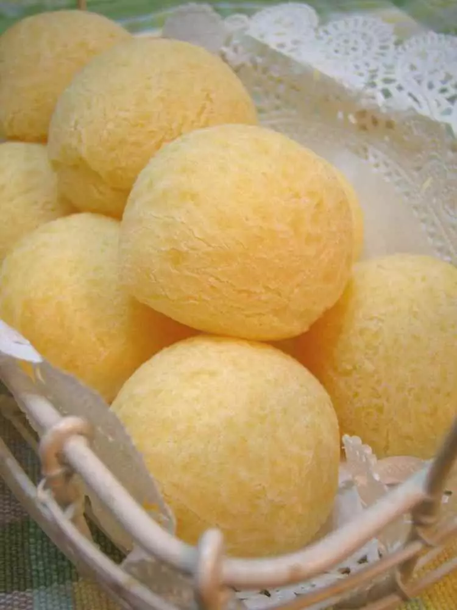

How to Make Pão de Queijo
(Cheese Pan in Portuguese)
This is the best cheese pan recipe ever!
Simple ingredients, quick to prepaer and amazingly delicious.
This cheese pan turns out perfectly every single time and breakfast.

Ingredients: unit cup
- Tapioca flour 1 and 1/2 cup
- Milk 2/3cup
- Your favorite cheese (parmesan, cheddar, etc.) 1/2 cup
- Olive Oil 1/3 cup
- Egg only 1
Instructions
- Preheat the oven to 400℉.
- If your favorite cheese is lumpy, put only the cheese and milk in the juicer and spread it well in order to finely grind it first.
- Put all the remaining ingredients in the juicer and spin for at least 1 minute to spread them well..
- Fill the mini cupcake pan with 3 to about 80%.
- Lower the oven to 350°F and bake for 10-15 minutes.